3.5 AVL Trees
An AVL (Adelson-Velskii and Landis) tree is identical to a binary search tree, except that for every node in the tree, the height of the left and right subtrees can differ by at most 1. (The height of an empty tree is defined to be -1 & height of a leaf node is 0.)
This balance condition ensures that the depth of the tree is O(log n).
In following trees, identify which is AVL tree?
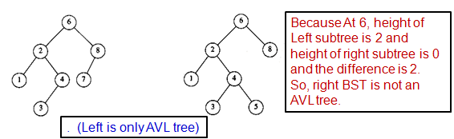
Smallest AVL tree of height 9
All the AVL tree operations can be performed in O(log n) time except insertion.
Because during an insertion, we need to update all the balancing information for the nodes on the path back to the root.
This can always be done with a simple modification to the tree, known as a single rotation and double rotation.
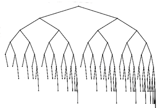
3.5.1 AVL Trees - Single Rotation
- Start at the node inserted and travel up the tree.
- Update the balance information at every node on the path.
- If we get to the root without having found any badly balanced nodes, no need for any rotation.
- Otherwise, a rotation at the first bad node found is required to adjust its balance. We can stop here and need not to continue going to the root.
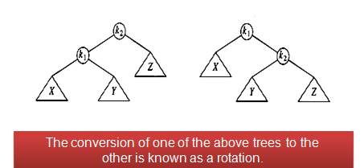
Type 1 : Right Rotation (Left subtree has more height)
- When new value is inserted in the subtree A,
- The AVL-property is violated at x since height of left(x) is h+2 but height of right(x) is h.
- So rotate with left child y. Make y as a parent, x as its right child and y's right child as left child of x.
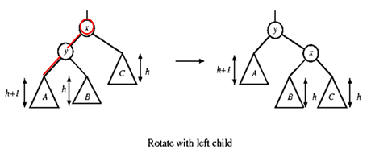
Type 2 : Left Rotation(Right subtree has more height)
- When new value is inserted in the subtree A,
- The AVL-property is violated at x since height of right(x) is h+2 but height of left(x) is h.
- So rotate with right child y. Make y as a parent, x as its left child and y's left child as right child of x.
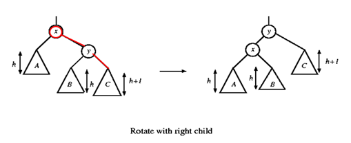
A rotation involves only a few pointer changes and alters the structure of the tree while preserving the search tree property.
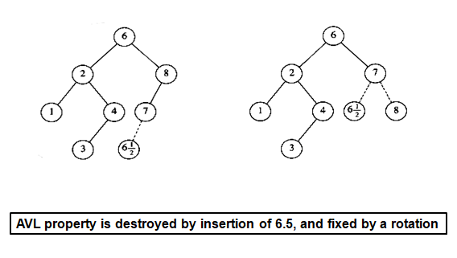
Insert elements 1 to 7 in a BST and maintain AVL tree properties
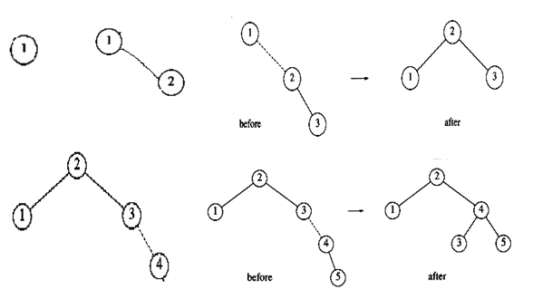
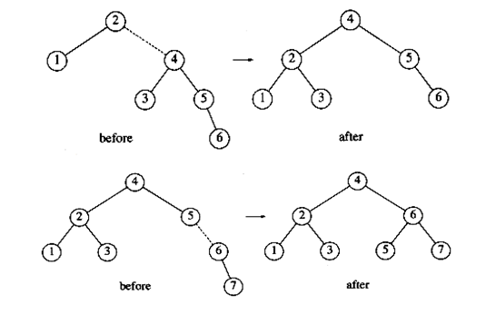
In some cases single rotation may not balance the height properly.
inserting 14 causes a height imbalance at node 7 and so a rotate with right child is done.
This is caused mainly because of the middle element 14.
So double rotation is required.
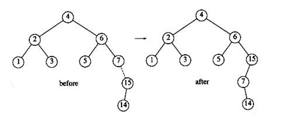
3.5.2 AVL Trees - Double Rotation
Double rotation involves 4 subtrees
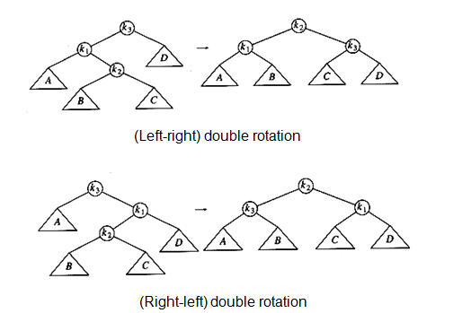
Insert 15, 14 in previous tree ( 1 to 7)
Here the double rotation is a right-left double rotation involving 7, 15, 14.
k1 is 15, k2 is 14 and k3 is 7.
Make k2 as parent node and k3 as left child and k1 as its right child.
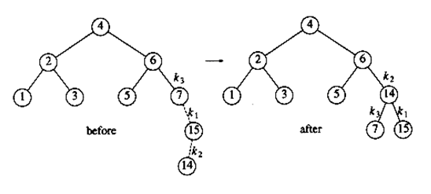
Insert 13.
Imbalance occurs at 6 involving a right-left.
So k1 is 14, k2 is 7 and k3 is 6.
Take k2(7) as parent and make k3 (6) as left child and k1(14) as right child.
Now k2's(7) right goes to k1's(14) left
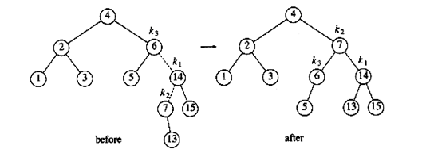
Insert 12
Imbalance occurs at 4 with right-right. So single left rotation is enough.
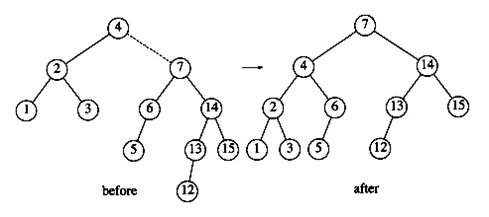
Insert 11
Imbalance occrist at 13 with left-left. So, single right rotation is enough.
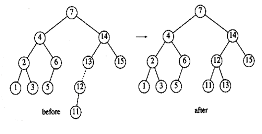
Final diagram after inserting 9, 8.
Draw intermediate diagrams.
Not try to insert 8.5